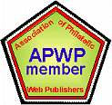

Our Reasons and Goals
There are many national and international organizations that group the stamp collectors or the philatelic professionals representing their interests. At the moment there is no organization grouping the recently appeared category of stamp collectors who combine their philatelic hobby with the Webmastering activity. On the present pages such stamp collectors are called the "Philatelic Webmasters" (PW).
The PW are different from the philatelic journalists, meaning here those who work for philatelic journals and who are grouped in the International Association of Philatelic Journalists (AIJP). They are also different from the publishers represented by the International Publishers' of Postage Catalogues, Stamp Albumes and Philatelic Publications Associations (ASCAT). The PW bring together to the Web what they love so much: an unparalleled information about their hobby, combined with their knowledge of webmastering. All of them started by themselves, being pushed by the impulse to share with others what they like, and by their interest to explore a new dimension of the human communication, made possible by the technological (r)evolution. Another difference is that the immense majority of PW is composed of amateurs and also that their number largely exceed as much the number of philatelic journalists as that of philatelic publishers, grouped by AIJP and ASCAT.
For many of PW the newsgroup rec.collecting.stamps.discuss was till now the only place where they could discuss their problems, or where they could announce their new pages. But they had and still have to take in consideration the interests of the majority of participants, interests that aren't focused on Webmastering.
Some of PW, among the most advanced and/or the most brave, have participated at Web competitions proposed by organizations representing the traditional philately (like FIP, MIDAPHIL). Many of them were often disappointed by the juries' lack of knowledge and/or lack of understanding of the specificity of the philatelic webmastering. The noting criteria were not clear or absent, the qualification of judges in webmastering was unknown and even the promised score sheets never arrived.
In the last years the number of young stamp collectors has continually diminished. New possibilities, like exciting games, computers and Internet became more attractive than stamp collecting. Through the philatelic webmastering activity we have a new chance to regain the young generations' interest for stamp collecting.
For all these reasons the time has come that we, the Philatelic Webmasters, take our destiny in our own hands! The best means to solve our own problems and to attain our goals is to act together, as members of a structured organization. These are the reasons why we have established the Philatelic Webmasters Organization (PWO). Our big advantage is that we have the means and the knowledge to efficiently communicate worldwide, with a matchless efficiency and at minimal costs.
What you can expect as a member from the PWO organization:
- You will be listed on the Members List, together with many other members who share your interests. This not only makes your site and yourself better visible, but also presents you in the proper context of sites that have many characteristics in common.
- As a member the following data will be listed: the name of your site, your topic (or the specialization for commercial sites), the kind of site (Homepage, Commercial, Postal Authority, Organization), the URL of your site, your name as that of the author of your site, the language of the site, the country where you live and your e-mail address.
- The membership facilitates the relationship and the exchange of experience between you and other members, thus encouraging direct contacts and synergies.
- The PWO organizes for its members on-line study groups, meetings, forums, common exhibitions and other activities.
- One important goal of PWO is to elaborate regulations and rules for Web sites competitions, to help in the preparation of competent judges and eventually to organize its own worldwide, regional, thematic or other kind of competitions. The judges will use clearly established and widely known criteria.
- A member has the possibility to announce the results of his work (new sites or pages) on a specialized Forum and to publish pages of general interest on the PWO site.
- Through the interaction with many other members who share your interests, you can take profit as much from the technical expertise as from the artistic and philatelic experience of all members.
- Member's privacy is protected by the PWO Statutes.
Some of the proposed facilities, like the on-line joining of the PWO, a forum and the free listing of all members on a Web site, are offered from the very beginning. The totality of the stated objectives will be attained gradually, just in time when a certain critical mass of members has been reached.
And last, but not least, the success of the PWO depends of the activity of us, its members. The results depend of our imagination, initiative and spirit of collaboration. Together we will succeed!
Notice: In order to better show our specificity, the Executive Council has decided to change the name of our organization from Association of Philatelic Web Publishers (APWP) to Philatelic Webmasters Association (PWO). The logos shown below will be adapted soon.
|
As an PWO member you are entitled to use the PWO member logo, shown on the right of this announcement. You are invited to display the logo on your site(s) and to link the image to the PWO home page at: http://www.values.ch/pwo.htm . |
|

 |
Alternatively you can use the smaller logo shown on the left. The logo was imagined by the artist (an PWO member) in the form of a house, thought as the meeting room of all passionate Philatelic Webmasters. |
Links:
|
|
|


Revised:
11/27/05
.
Victor Manta, Switzerland